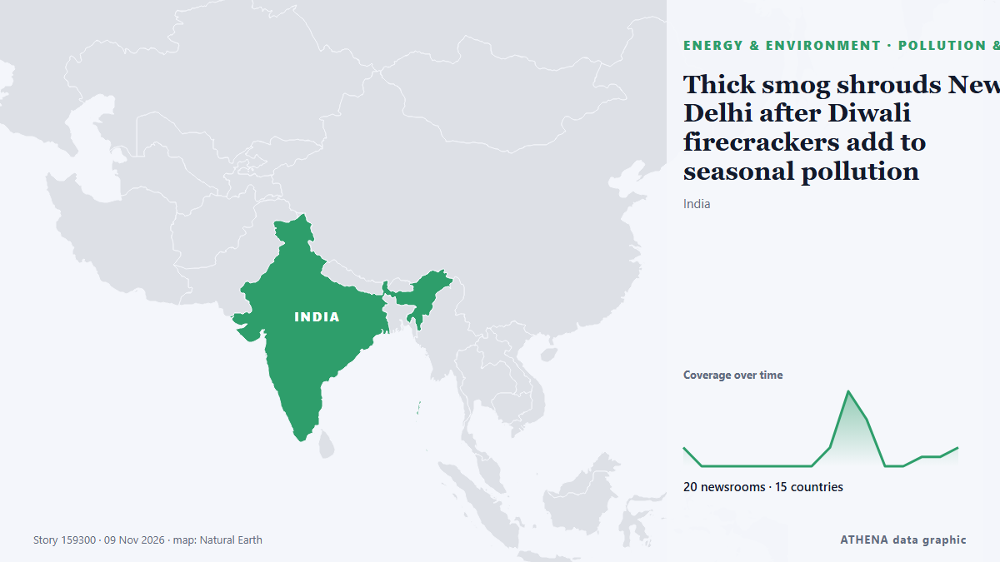

Énergie, ressources et environnement
SponsoriséPrésenté par  Cybernetics and Artificial Intelligence Lab Welcome to the Cybernetics and Artificial Intelligence Laboratory, established at the Department of Business Administration of the National and Kapodistrian University of Athens. The lab is headed by Professor Dimitrios Thomakos. The lab aims to do research that can be published in top venues. Our research uses tools and methods of Artificial Intelligence, and lies in the following areas: - Forecasting - Decision making - Cyber security - Finance We are always looking forward to collaborating with exceptional students!
Cybernetics and Artificial Intelligence Lab Welcome to the Cybernetics and Artificial Intelligence Laboratory, established at the Department of Business Administration of the National and Kapodistrian University of Athens. The lab is headed by Professor Dimitrios Thomakos. The lab aims to do research that can be published in top venues. Our research uses tools and methods of Artificial Intelligence, and lies in the following areas: - Forecasting - Decision making - Cyber security - Finance We are always looking forward to collaborating with exceptional students!
Les titres sont affichés en anglais, tels que publiés.

Pollution et biodiversitéThick smog shrouds New Delhi after Diwali firecrackers add to seasonal pollution
New Delhi, home to over 30 million people, regularly ranks among the world's most polluted areas during winter, with pollution worsening in late October and November. de NPR
| 27 oct. | 113 |
|---|---|
| 28 oct. | 89 |
| 29 oct. | 76 |
| 30 oct. | 94 |
| 31 oct. | 39 |
| 1 nov. | 55 |
| 2 nov. | 121 |
| 3 nov. | 93 |
| 4 nov. | 99 |
| 5 nov. | 96 |
| 6 nov. | 58 |
| 7 nov. | 42 |
| 8 nov. | 47 |
| 9 nov. | 56 |
Professor pinpoints 'most concerning' impact of polar vortex — not snow or climate change
'Unprecedented' weather patterns have led to fears that the polar vortex is going to unleash snow chaos on the UK. de WalesOnline
IEA Backs Electrification Efforts at COP31 Climate Summit
The International Energy Agency (IEA) will be pushing for faster and wider electrification at COP31 starting on Monday in Antalya, Turkey, as leaders and policymakers gather for the climate summit… de OilPrice.com
Climate Battle Begins in Antalya as US Stays Away, Greece and Cyprus Attend
As the climate crisis accelerates, COP31 opens in Antalya. de to vima
Rosneft introduces fuel sale limits at filling stations across Russia
30-liter city and 50-liter highway limits reported at Rosneft stations amid refinery disruptions. de Anadolu Agency (English)
North American rig count up slightly as Canada adds oil rigs
In North America, 823 rigs were working this week, up 3 from last week, and up 74 from this time last year. de Oil & Gas Journal
Singapore to end N95 mask distribution on Saturday as haze abates
The Ministry of Health will deactivate both the Public Health Preparedness Clinic Scheme and the Haze Subsidy Scheme from Nov 12. de CNA (Channel NewsAsia)
Heavy Rain Floods 70,000 Displacement Tents Across Gaza
Thousands of families face worsening conditions as winter storms leave tents flooded and belongings destroyed. de News of Bahrain
Global energy prices extend losses as Brent crude drops over 3%
Brent crude slides 3.2% to $95.1 per barrel and WTI falls 2.6% to $88.4. de Anadolu Agency (English)
Delhi air pollution: Several monitoring stations did not report AQI readings on Diwali night
Peak air pollution levels are historically observed during and immediately after the festival. de Scroll.in
Day 6 Turkish Students to Visit Bulgarian Research Vessel RSV 421 in Antalya During COP31
As Türkiye prepares to host COP31 in Antalya next week, Turkish academics are calling for the U.N. climate summit to deliver measurable results on water security, food waste and cl... de Daily Sabah
Oil steadies after Trump signals restraint on Iran, Hormuz risks persist
NEW DELHI/PERTH: Oil prices were steady on Monday after US President Donald Trump downplayed the likelihood of new strikes on Iran, though attacks on ships near the Strait of Hormuz kept supply… de Arab News
Ankara’s COP31 message: electrify, recycle, don’t mention coal
As the COP31 climate summit opened Monday in Antalya, the Turkish government put electrification at the center of its agenda, promoting renewable energy expansion and its Zero Waste initiative as… de Turkish Minute
Current price of oil as of November 4, 2026
When oil prices change, it affects your energy costs—and even the price of everyday items. de Fortune
Drones strike Russia’s second-largest oil refinery
A fire broke out at the Kirishi Oil Refinery (KINEF) in Russia’s Leningrad region following a drone attack overnight on November 9. de Ukrinform (English)
Delhi records most polluted Diwali in five years; AQI remains ‘very poor’ a day after
India orders schools in and around Delhi to offer online classes, encourages people to work from home ahead of Diwali. de Express Tribune
Tents 'entirely submerged' has heavy rains hit Gaza
Rain began on Friday with 70,000 tents flooded; officials warn equipment shortages overwhelming emergency efforts. de Express Tribune
World entering ‘age of climate extremes’, says UN chief
Antonio Guterres urged leaders at the COP31 climate conference in Turkey to 'get serious'. de Free Malaysia Today
COP31 summit leaders urge world to “move faster” on climate
(1st UPDATE) This year is on track to be one of the four hottest on record, driven by a powerful El Niño, says a United Nations report. de Rappler
Moldova 'buys zero Russian gas,' launches new power line to EU
"For decades, Moscow used energy to blackmail us. de Kyiv Independent
Ireland takes lead for EU at climate summit as UN warns planet in ‘new age of extremes’
Climate Minister Darragh O’Brien will coordinate the bloc’s negotiations alongside the European Commission at COP31. de TheJournal.ie
22 injured as magnitude 5.7 earthquake hits central Japan: What we know
An earthquake with a preliminary magnitude of 5.7 hit central Japan early Sunday, leaving over 20 people injured in Aichi and Shizuok. de Mainichi (English)
Hyundai Motor's HTWO teams up with Air Liquide to expand hydrogen mobility in China
SEOUL, Nov. 9 (Yonhap) -- Hyundai Motor Group said Monday its hydrogen business ... de Yonhap (English)
Earthquake with 5.7 magnitude occurred in western Japan
The earthquake caused disruptions to rail services, including the Shinkansen high-speed trains, Kyodo reported. de TASS (English)
Vaca Muerta export terminal advances as Jumbo Offshore completes installation campaign
Jumbo Offshore has installed two PLEMs and delivered two CALM buoys for the Vaca Muerta Oil Sur export terminal offshore Argentina. de World Oil
Petrobras Advances Tupi Oil Field Redevelopment with FPSO Design Approval
Petrobras has secured Approval in Principle (AiP) from Lloyd's Register (LR) for the conceptual design of its proposed REVIT I TUPI floating production, storage and offloading (FPSO) unit… de Offshore Engineer
Zaporizhzhia nuclear plant relying on generators again after losing external power supply
“The cause and location of the latest disconnection are not yet known,” the IAEA said. de The Straits Times
President Barzani Offers Condolences to Families of Two Erbil Flood Victims
President Masoud Barzani expresses sympathy following the deaths of two residents, including a five-year-old child, in heavy rainfall and flooding in Erbil. de Kurdistan24 (English)
Ecuador’s Role in Latin America Explained
Ecuador uses the US dollar, ships shrimp and bananas worldwide and fights gangs at home. de The Rio Times
Navy assists to put out fire at Galle fisheries harbour boatyard
The Sri Lanka Navy rushed a firefighting team from the Southern Naval Command to help extinguish a sudden fire at a boat maintenance yard in the Galle fisheries harbour this afternoon, 8 November… de The Island
Egypt Deepens Gas Cuts To Fertilizer Makers As Energy Squeeze Tightens
Misr Fertilizers Production Company said it had been told of the reduction, which follows an earlier 20% cut to gas supplies for fertilizer plants. de Business Standard
US Extends Puerto Rico Grid Emergency
The US Department of Energy renewed two emergency orders for Puerto Rico’s power system, in force from 8 November 2026 through 5 February 2027. de The Rio Times
Democrats planning flood of AI bills when they take control of Congress
Most US voters think Trump's administration and Congress are not taking the risks of AI seriously enough. de Express Tribune
Beloved husband and dad among this week's Bristol funeral notices
Our thoughts are with those who have lost a loved one. de Bristol Post
As COP31 comes to Turkey, satellites reveal a landfill methane problem
Turkey, the host for COP31, is the world’s fifth-biggest emitter of methane from solid waste. de The Straits Times